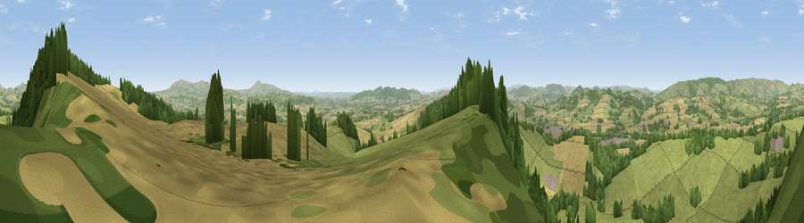

Viewpoint near Halford
#3113 in England · top 7% of its area beats it · near HalfordThe view, rendered

A 360° render of this exact spot computed from the terrain model, tree cover and land cover — summer colours, afternoon light, calibrated against photographs of famous viewpoints. Real trees, hedges and buildings will differ in detail.
The panorama
Grey silhouette: terrain skyline in each direction (720 bearings, Earth curvature and refraction included). Dashed green: skyline with trees (+15 m) and buildings (+8 m) as obstacles. Blue strip: how far the ground is visible on each bearing.
Where the view opens
Wedge length = distance to the farthest visible ground on that bearing (vegetation-aware). Rings at 10, 25 and 50 km.
What fills the view
50% grassland · 30% woodland · 19% cropland ·
Angular shares of the visible panorama (visual magnitude), not map area. Landscape diversity 0.46 (0–1 Shannon).
Key numbers
More beautiful places nearby
The staircase of upgrades: each row has a higher view potential than everything closer. Driving times are estimates from straight-line distance, calibrated against real road routing — check an actual route before setting out.
| Place | Direction | Drive | Score |
|---|---|---|---|
| Viewpoint near Halford | NNE · 1 km | ~2 min | 76.2 |
| Viewpoint near Little Stretton | N · 7 km | ~15 min | 77.5 |
| Ragleth Hill | N · 8 km | ~16 min | 78.6 |
| Viewpoint near Asterton | WNW · 8 km | ~16 min | 83.0 |
| The Lawley | NNE · 13 km | ~25 min | 85.8 |
| Viewpoint near Little Wenlock | NE · 29 km | ~46 min | 86.6 |
| North Hill | SE · 49 km | ~70 min | 86.8 |
| Worcestershire Beacon | SE · 50 km | ~71 min | 87.1 |
52.45563, -2.79941 · source: screening · position refined by local search. Computed location — check access rights before visiting.